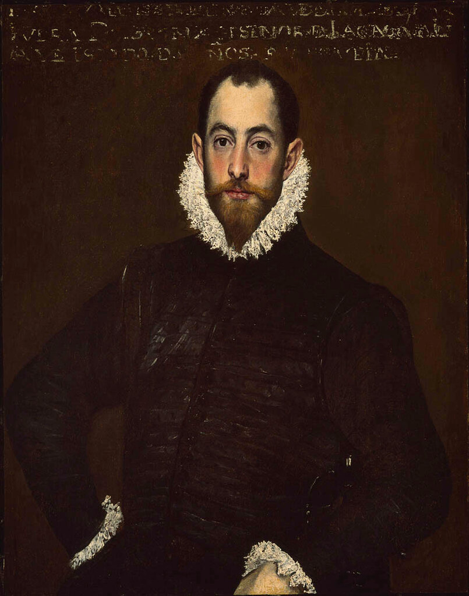
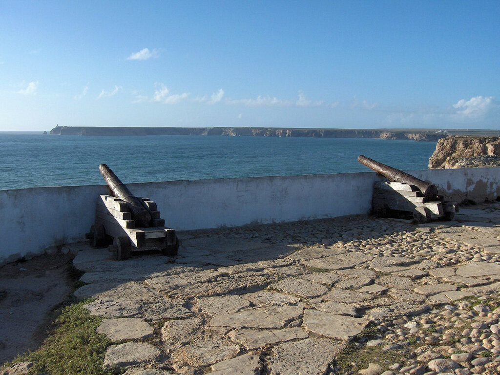
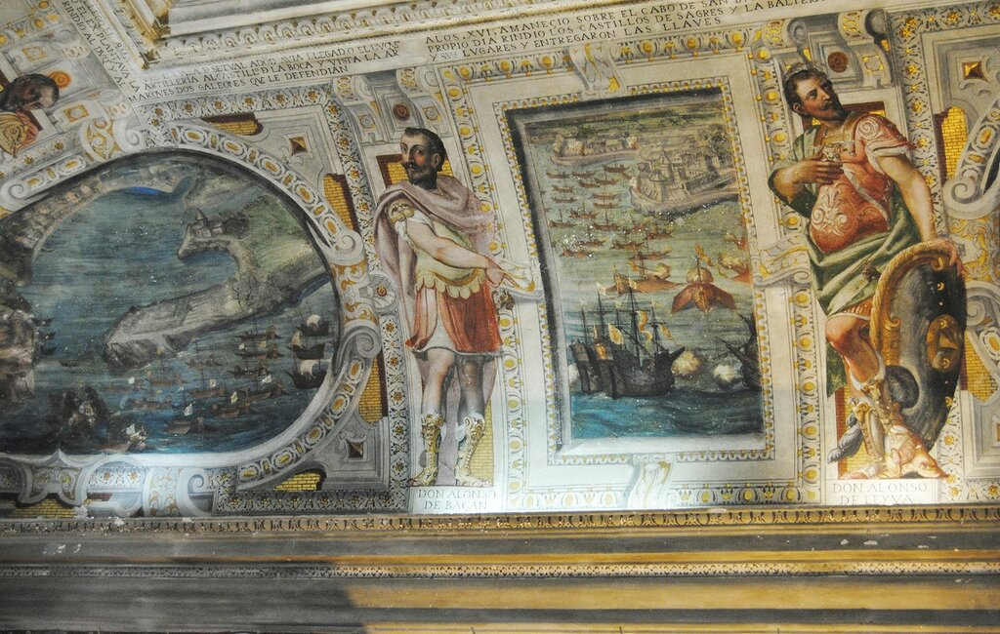
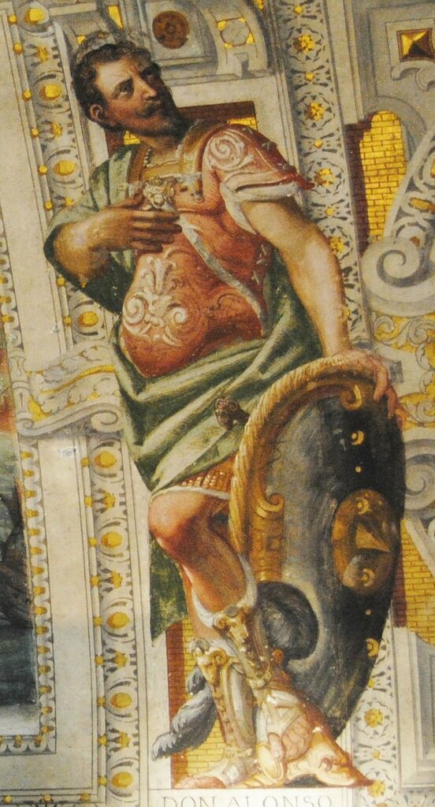
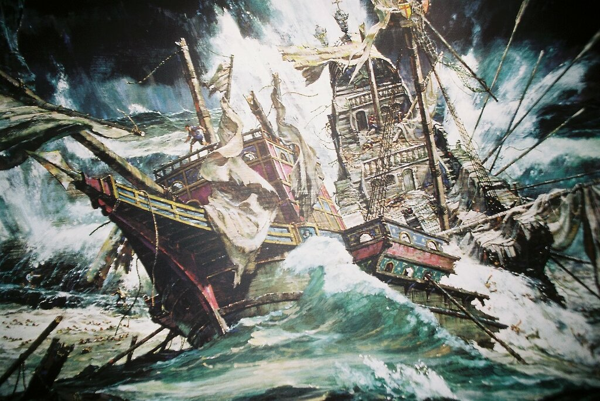
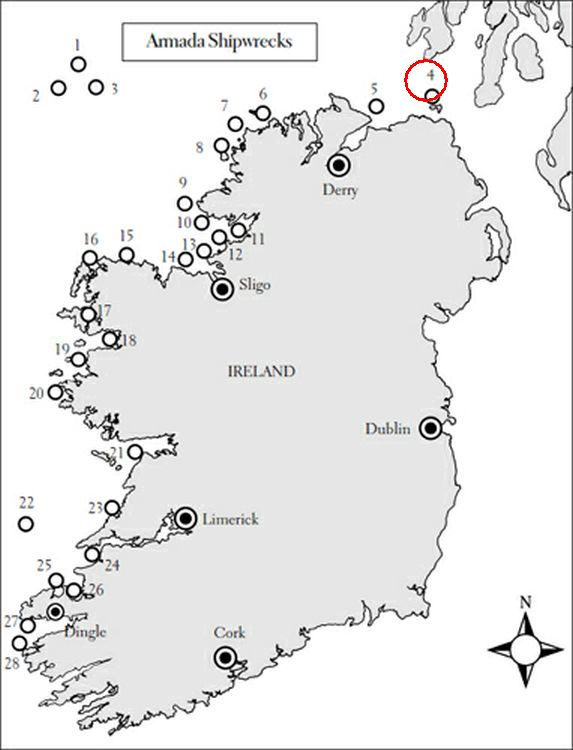

Второй (наряду с Рекальде) заметной фигурой из командования Непобедимой армады, о которой мы хотим поговорить, является дон Алонсо Мартинес де Лейва (Don Alonso Martínez de Leiva, 1544-1588; дата рождения указана приблизительно). Начнем с главной интриги вокруг его имени, которая получила широкую известность: его ли изобразил Эль Греко на своем знаменитом полотне «Портрет джентльмена из Каса-де-Лейва» (1580).

El Greco, RETRATO DE CABALLERO DE LA CASA DE LEIVA. Музей изящных искусств, Монреаль.
Учитывая дату исполнения портрета – 1580 год – на роль кабальеро подходят два человека, два сводных брата по отцу: интересующий нас Алонсо Мартинес де Лейва и Санчо Мартинес де Лейва (Sancho Martínez de Leiva, 1555-1601). Оба брата были блестящими воинами, Алонсо закончил свои дни в морской пучине у берегов Ирландии в 1588 году, Санчо – губернатором Камбре в 1604 году. Оба брата были рыцарями ордена Сантьяго. Конечно, наличие этого ордена на портрете было бы отличительным признаком, но Алонсо получил его лишь в 1588 году, а Санчо – в1597. Именно дон Алонсо секретным указом короля Филиппа II был назначен преемником герцога Медина-Сидония на посту командующего Армадой в случае смерти последнего.
К сожалению, нет других изображений этих молодых людей, чтобы сравнить их внешность и сделать выбор в пользу одного или другого.
За одним исключением.
В испанском городке Висо-дель-Маркес (Viso del Marqués), удаленном от моря на несколько сотен километров, находится Музей морского флота Испании – Исторический архив Альваро де Басана, первого маркиза де Санта Крус. Среди множества стенных росписей, прославляющих подвиги маркиза, есть фреска с изображением битвы при Сагреше. Сагреш – небольшой городок на юго-западной оконечности Потругалии, близ мыса Сан-Висенти.

Крепость Сагреш, мыс Сан-Висенти. Фото Georges Jansoone.
«Битва» сказано громко, в ее результате испанцы всего лишь получили ключи от небольшой крепости; но тот факт, что после нее Испания на длительное время получила господство над Португалией оправдывает появление этой фрески в ряду изображений славных побед испанской короны.

Фреска во дворце Висо-дель-Маркес с изображением битвы при Сан-Винсенте в 1580 году.
По сторонам от батальной сцены расположены фигуры Альваро де Басана и Алонсо Мартинеса де Лейва. Надо быть слишком хорошим физиономистом или криминалистом, чтобы сравнить изображение Лейвы, которое мы видим на этой фреске, с портретом Эль Греко.

Есть у нас еще одно свидетельство, пусть не изобразительное, а вербальное, о том, как выглядел дон Алонсо Мартинес де Лейва. Некий англичанин James Machery, который участвовал в боевых действиях на стороне испанцев (утверждали, что по принуждению: "Dicen que a la fuerza"), на допросе у Лорда-депутата Ирландии Уильяма Фицуильяма так описал дона Алонсо:
“He saieth that Don Alonso, for his stature was tawle and slender, of a whitly complexion, of a flaxen and smothe heare, of behavior mylde and temperate, of speeche good and deliberate, greatly reverencid not only of his owne men, but generally of all the whole companie”
Он сказал, что дон Алонсо был высок и худощав, бледнолиц, со светлыми густыми волосами, мягкий и сдержанный в общении, свободно владеющий речью, уважительно относящийся не только к людям из своего круга, но ко всем окружающим.
Еще в 1940 г. испанский историк и искусствовед Don Valentín de Sambricio y Lópeziv предположил, что все имеющиеся в нашем распоряжении факты дают основание для того, чтобы отнести портрет Эль Греко к дону Алонсо. Повторно этот вывод сделали современные историки К.Мартин и Д.Паркер в 1988 году. В частности, в пользу этой версии приводится тот факт, что именно в 1580 году дон Алонсо, став Капитан-генералом галер Сицилии, сопровождал инфанту Каталину Микаэлу во время ее брачной церемонии с герцогом Савойи. Вот именно в этот момент, как считают, он и стал натурой для Эль Греко, лишь недавно прибывшего в Испанию и начавшего работу над портретами влиятельных людей страны.
Дон Алонсо погиб ночью 25 октября 1588 года во время крушения галеаса “Girona” у побережья Ирландии и там же был похоронен, его крест Сантьяго хранится в музее Ольстера, в Белфасте.

Крушение галеаса Girona.
Вот схема кораблекрушений кораблей Армады у побережья Ирландии. Крушение галеаса, на борту которого был Лейва, обозначено цифрой 4.

На борту галеаса собрались остатки всех экипажей с погибших на тот момент у берегов Ирландии кораблей Армады – около 1300 человек, значительная часть которых – это сливки офицерского состава испанского флота. Выжило после крушения только пять (по другим данным - девять) человек.
Интересен рассказ о том, каким образом дон Алонсо попал на злополучный галеас. После гибели флагманского корабля La Rata Santa Maria Encoronada, на котором находился Лейва, он с группой членов экипажа высадился на ирландский берег в районе залива Blacksod Bay (номер 15 на схеме крушений). Им удалось узнать, что в заливе Элли на якоре стоит корабль Армады урка Duquesa Santa Ana. Лейва с товарищами преодолели пешком расстояние в 40 км и достигли места стоянки Св.Анны. Дон Алонсо принял командование кораблем на себя и повел его к побережью Шотландии для выполнения поставленного перед Армадой задания. Однако и этот корабль потерпел крушение из-за сильнейшего шторма (цифра 8 на схеме). Лейва с командой смог высадиться на берег и захватить находящийся поблизости форт. Вскоре пришло известие, что примерно в тридцати километрах южнее в море находится галеас Girona (грузоподъемность 600 тонн, 50 орудий). Лейва со товарищи в очередной раз решили испытать судьбу. Они в течение двух недель ремонтировали получивший повреждения галеас и вышли в море. О судьбе этого похода мы написали выше.
Портрет кабальеро из дома Лейвы отправился в изгнание в Канаду, в музей Монреаля. Вопрос о том, кого же из братьев изобразил Эль Греко, остается открытым до сегодняшнего дня.
Продолжение последует.